Clear
If the audience has to decode the message, the content has not finished its job.
underline the pointContent writer · Science communicator · Editor · Storyteller
I’m Hiya Aidasani, a biotechnology student, content creator, editor and storyteller. I enjoy taking ideas that feel complicated, technical or ordinary—and finding the clearest, most engaging way to tell their story.
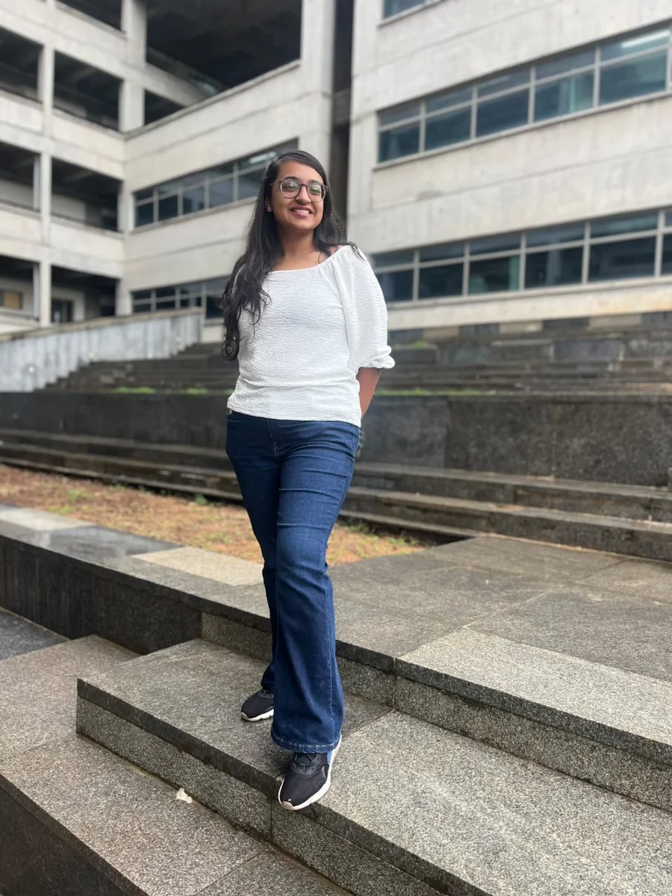
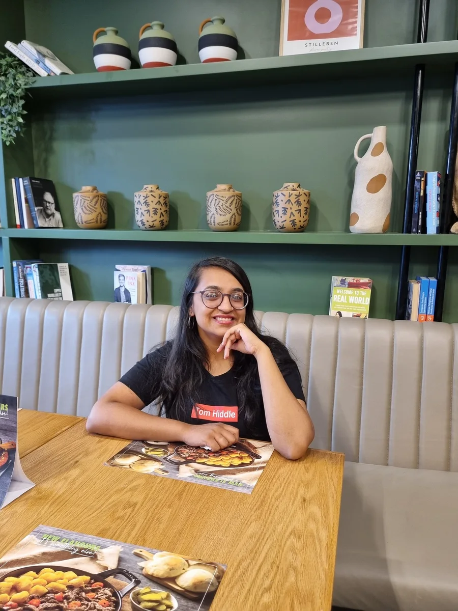
My background in biotechnology has trained me to look beyond the surface. Reading research papers, questioning evidence and breaking down complicated systems have become part of how I think.
But what interests me most is what happens after we understand an idea: how do we communicate it so someone else understands it too?
I believe content is one of the most powerful ways to communicate today. It can be a carefully structured story, a conversational reel, an aesthetic post or a simple sentence that makes someone pause. The format can change, but my goal remains the same: the audience should get it.
For me, good writing is not about using the biggest words. It is about finding the clearest ones. This belief has shaped my work in scientific communication, social media, editing, scripting and brand storytelling.
If the audience has to decode the message, the content has not finished its job.
underline the pointGood content begins by asking better questions and looking beyond the obvious answer.
ask one more whyFacts may inform people, but stories help them care and remember.
find the person inside itDrag the switch to see how I translate a technical idea for a wider audience.
Polycystic ovary syndrome is a heterogeneous endocrine-metabolic disorder characterised by hyperandrogenism, ovulatory dysfunction and polycystic ovarian morphology.
Accurate—but hard to enterWork, with context
I look at the audience, find the useful angle and shape the message around how people actually read, watch and respond.
01 / Personal platform
Making health information feel less like a lecture—and more like a conversation worth staying for.
I independently research topics, plan content, write scripts, shoot, present, edit, colour-correct, package and respond to the audience. The platform became my space to test formats and learn what clarity looks like in motion.
“Simplifying information does not mean removing its depth. It means finding a better way into the subject.”Visit Honest Health ↗
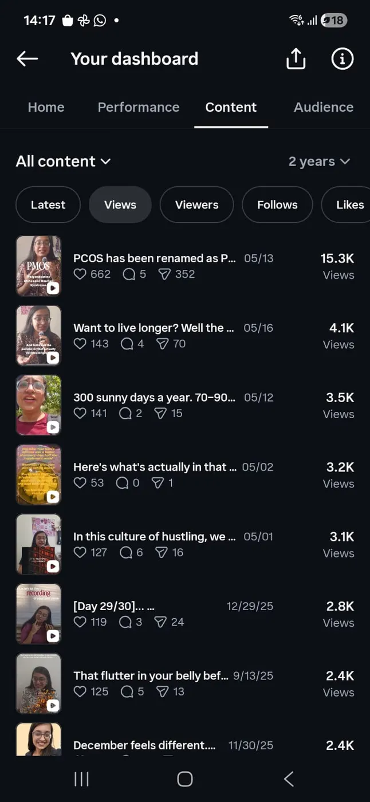
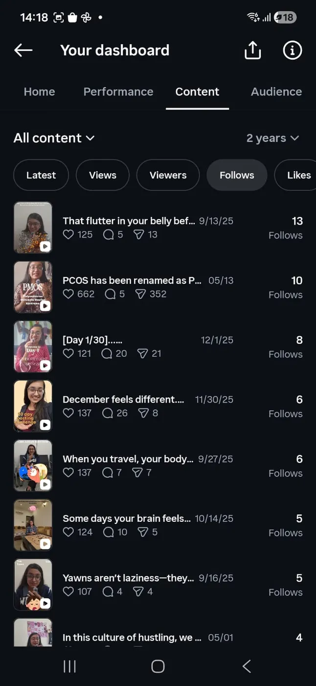
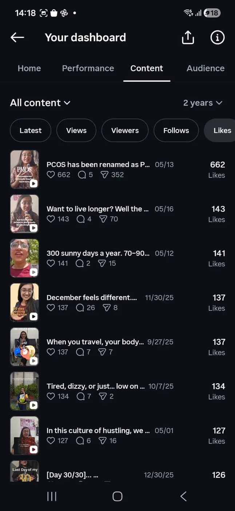
02 / Narrative-led writing
Niche subjects become approachable when you find the story inside them.
My LinkedIn series explore industry developments, personal learning, emerging technology and founder journeys. Across each, I research the subject, identify the angle, build a hook and make the payoff worth the scroll.
Industry developments, translated into understandable narratives.
Learning commercial thinking in public, one problem at a time.
Where emerging technology meets the human story.
The decisions, doubts and people behind new ventures.
03 / Product storytelling
A science-communication product startup making biology- and genetics-based card games. I helped translate the science and products into stories that school and college audiences could understand and enjoy.
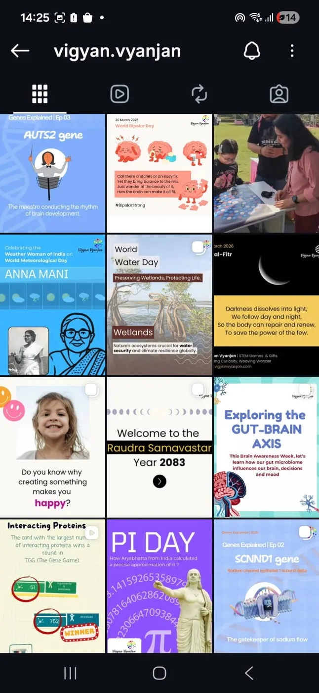
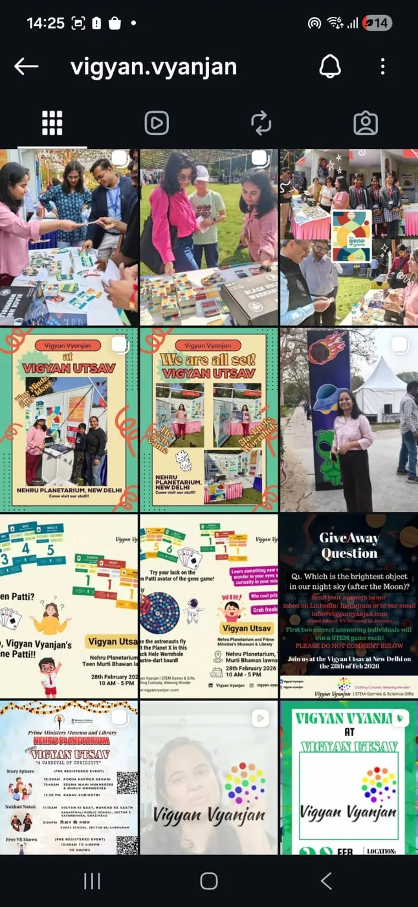
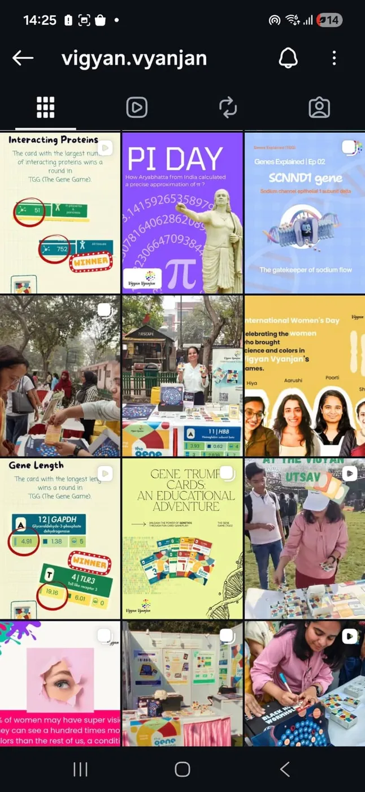
04 / Food brand content
I managed social content around each product—from video and photography concepts to posters, captions and marketplace storytelling—turning features into reasons the audience could care about.
05 / Scientific editing
I translate the science behind a new sleep supplement into language that feels trustworthy, useful and easy to understand—without flattening the evidence.
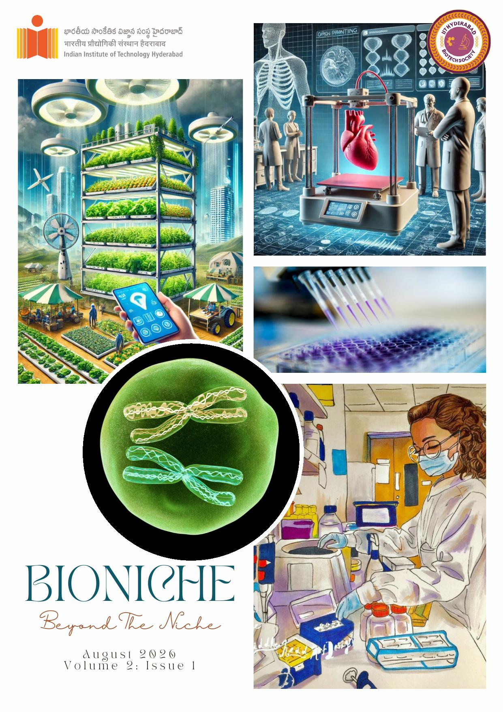
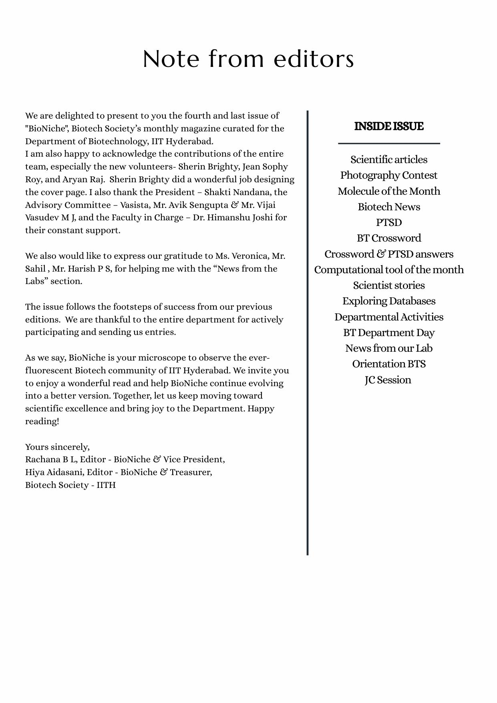
06 / Publication editing
As editor, I help a five-member team turn varied contributions into one coherent monthly publication—shaping selection, clarity, structure, tone and presentation for 200+ readers.
Leadership taught me that communication is also listening, presenting, persuading, coordinating people and giving an idea the right visual form.
Led a 25-member team, launched two scientific initiatives, established an R&D wing and shaped how events and ideas were presented to different audiences.
Led event promotion, pitching and stakeholder communication for seven-plus university events and Eastern India’s second-largest E-Summit.
Digital storytelling and visual content helped generate more than ₹2 lakh in donations for children supported by the NGO.
Managing budgets, vendors, workflows and stakeholders taught me that clear communication is often the infrastructure behind smooth execution.
Maintaining one recognisable publication across multiple voices strengthened my editorial judgement and visual consistency.
Experiments, edits, outcomes
This is the thinking table: selected work, rough edges, stronger edits and the questions I ask before anything goes live.
A complex nomenclature shift turned into an accessible health story.
Finding a broad human entry point into specialist industry subjects.
Evidence-first communication for an upcoming consumer supplement.
Content across listings, social media and packaging.
Digital storytelling that moved from message to community participation.
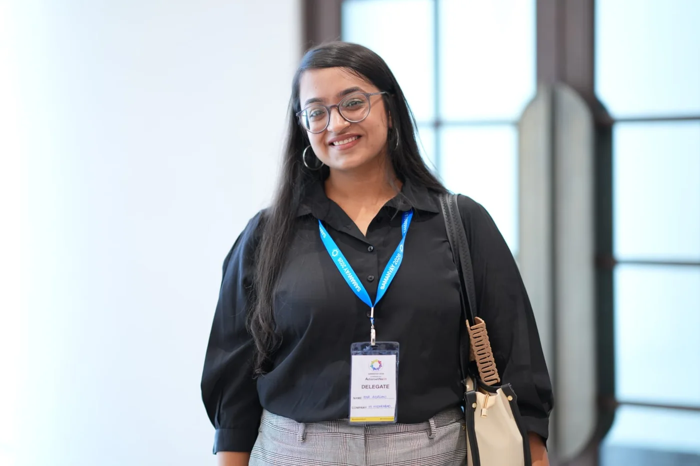
How I think
What does the audience actually need?
Creative playground
Because finished content rarely begins finished.
“What if the name of a disease changes before its treatment does?”
utilise technical terminology
say what you mean
One strong idea.
One clear audience.
One reason to remember.
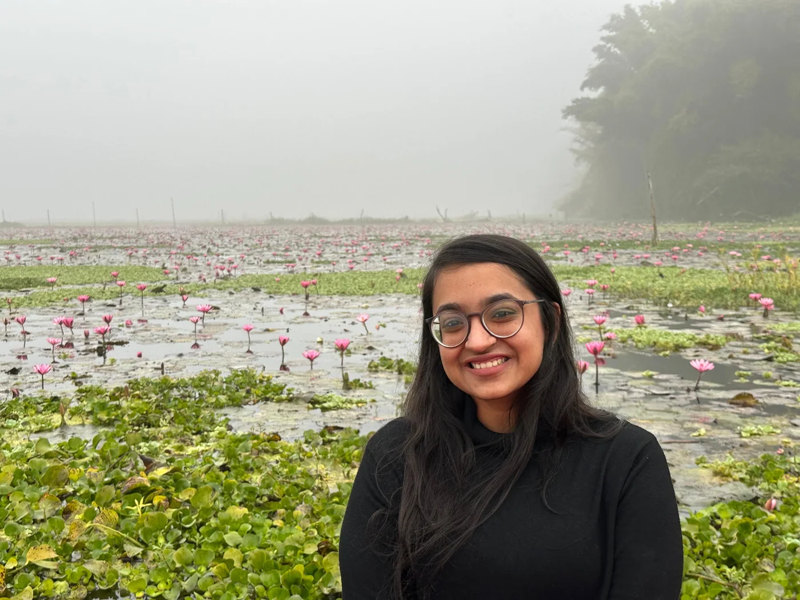
“I do not want content to merely sound intelligent. I want it to make the reader feel included in the idea.”
Let’s make the idea land
I’m interested in opportunities across content writing, brand storytelling, editorial, social media, creative strategy and communication—especially where curiosity, clarity and experimentation are valued.